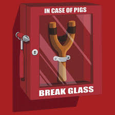

L'inizio di una guerra epica
La storia di Angry Birds nasce molto molto lontano..nel lontano 2009 nella fredda Finlandia grazie all'azienda Rovio Mobile.
La storia e le curiosita' di un fenomeno mondiale..
La trama del videogioco è semplice e parla di un gruppo di uccelli arrabbiati (appunto gli "Angry Birds") che vogliono vendicarsi con dei maialini verdi (i "Piggies") colpevoli di aver rubato loro le uova per mangiarsene. Si armano così di fionda e si lanciano contro i loro nemici per eliminarli. Diversi tra di essi, ognuno di loro è dotato di un potere speciale: Chuck va più veloce, i Blues si dividono in 3 ecc...